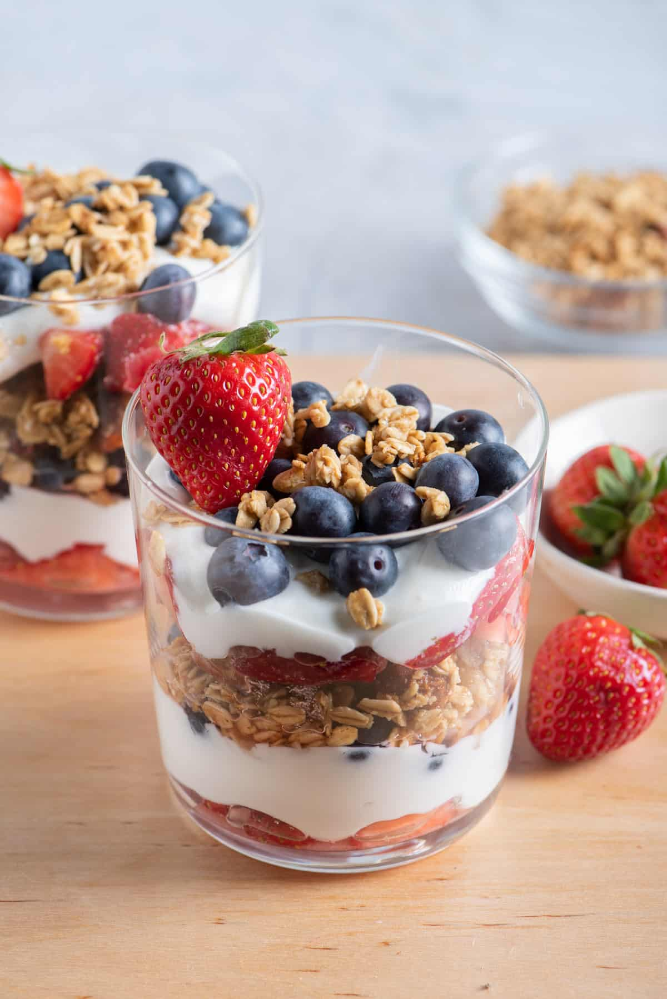

Parfait

Description
The parfait is the perfect snack. It combines yogurt with a variety of fruit. It's a healthy alternative to candy or sweets for those with a sweet tooth.
Ingredients
- yogurt — feel free to use your favorite flavor (or non-flavor)
- fruit: blueberries, strawberries, blackberries, banana, etc. choose your favorites here, but i like berries
- granola
Steps
- cut fruit to size as needed
- put yogurt in a cup
- add fruit
- add granola
- mix